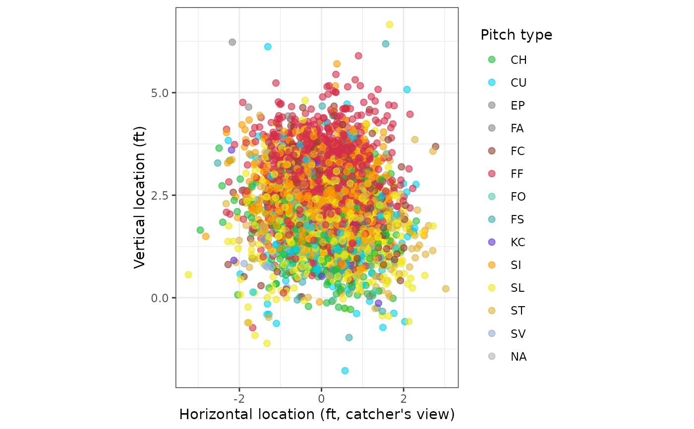

Plots pitch locations from the catcher's perspective with the batter's
strike zone overlaid, from Statcast pitch data as returned by
statcast_search() or mlb_pbp() (the latter via its
pitchData.coordinates.* columns renamed to plate_x / plate_z).
Colors default to Baseball Savant's pitch-type palette via
statcast_pitch_colors().
Usage
ggpitchzone(
data,
x_value = "plate_x",
y_value = "plate_z",
color_value = "pitch_type",
sz_top = "sz_top",
sz_bot = "sz_bot",
point_alpha = 0.6,
point_size = 2
)Arguments
- data
A data frame of pitch data containing plate-crossing coordinates and strike-zone bounds.
- x_value
Column with the horizontal plate-crossing coordinate in feet (catcher's perspective). Defaults to
"plate_x".- y_value
Column with the vertical plate-crossing coordinate in feet. Defaults to
"plate_z".- color_value
Categorical column to color points by, as a string. Defaults to
"pitch_type", colored with the Savant palette; pass another column (orNULLfor uncolored points) to override.- sz_top
Column with the batter's strike-zone top (feet). Defaults to
"sz_top"; the zone rectangle uses the column means.- sz_bot
Column with the batter's strike-zone bottom (feet). Defaults to
"sz_bot".- point_alpha
Alpha for the pitch points. Defaults to
0.6.- point_size
Size of the pitch points. Defaults to
2.
Value
A ggplot2 object: pitch locations from the catcher's perspective with the strike zone drawn as a rectangle.
Examples
# \donttest{
try({
pitches <- statcast_search("2024-06-01", "2024-06-01")
ggpitchzone(pitches)
})
#> Warning: Removed 11 rows containing missing values or values outside the scale
#> range (`geom_point()`).

# }